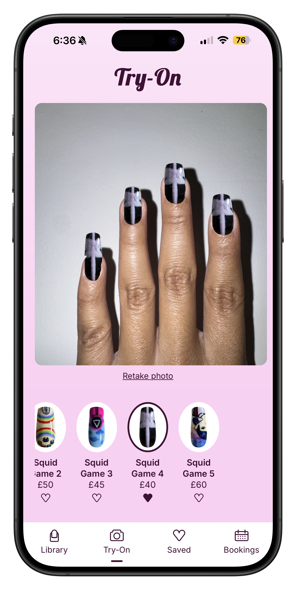
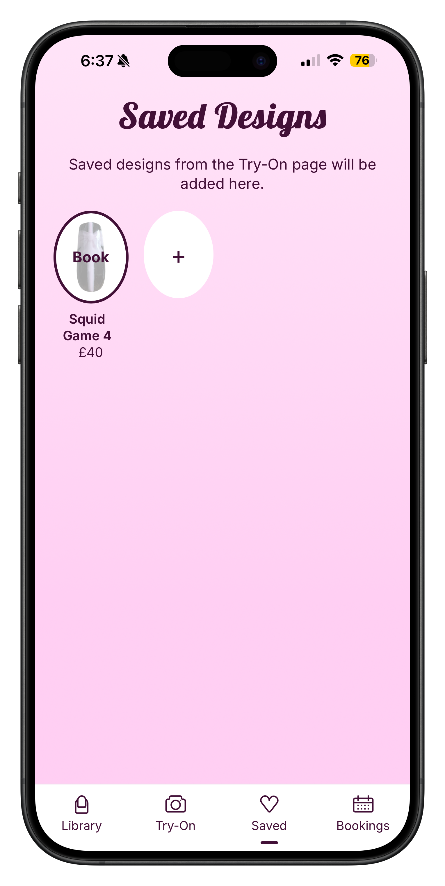
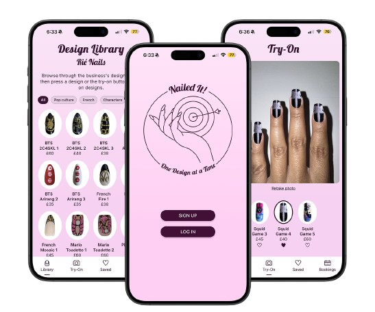
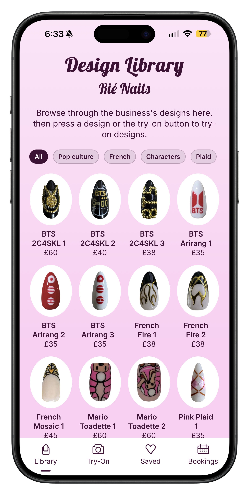
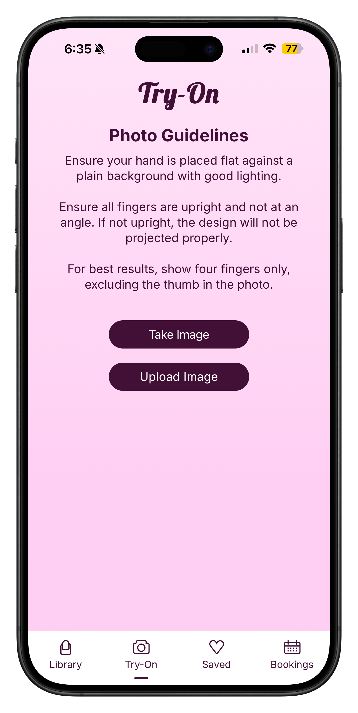
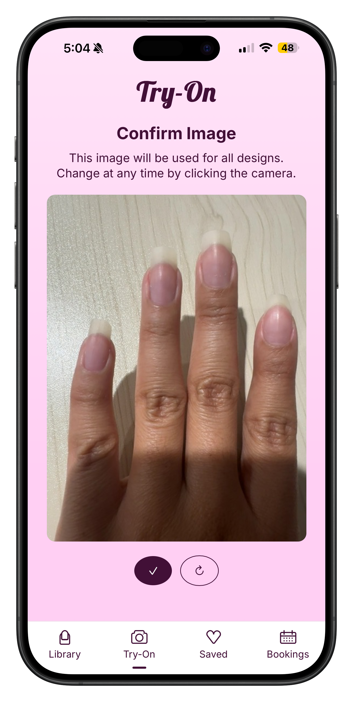
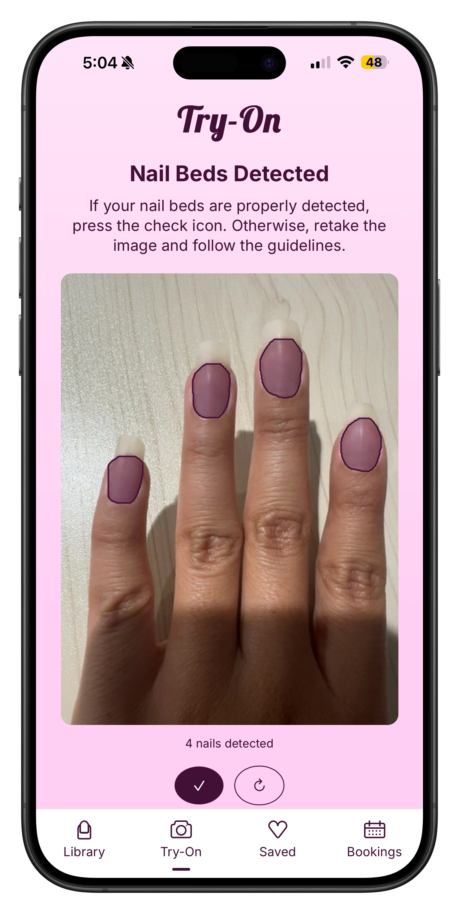

›
› ›
›

University of Edinburgh · 2026
A virtual nail design try-on app for salons — letting clients see designs on their own hands before they book, reducing decision paralysis at the point of choice.

The Problem
Nail salons offer hundreds of designs. Clients browse on their phones and commit before they ever sit in the chair. That gap between scrolling and booking is where anxiety lives. Hick's Law and cognitive load theory both predict what users actually report: more options without context causes stalling, not confidence.
When faced with an overwhelming library of images, clients second-guess, change their mind mid-appointment, or don't book at all. This costs salons time and clients confidence. Nailed It! doesn't reduce the options — it makes the right one feel obvious by letting clients see it on their own hand before booking an appointment.
Decision time grows with the number of options
Cognitive Load Theory — scrolling flat images is exhausting and information needs structure the human brain can process efficiently
Salon subscription model — QR code + Instagram distribution
Computer vision nail segmentation + design perspective warp

Design library with tag filters — Pop culture, French, Characters, Paid — reducing cognitive load by letting users narrow scope before committing attention.
User Journey
The app is structured around a single flow with each stage designed in response to user research.
Step 01
Browse the Design Library
Clients browse the salon's full design library, filterable by style tags. Filtering before browsing reduces the overwhelming effect of a large catalogue and focuses attention on relevant options.
Step 02
Capture Your Hand
The user photographs their hand using the in-app camera or uploads from their library. Clear guidelines on hand position and lighting reduce failed detections before they happen.
Step 03
Confirm Before Processing
The captured image is shown for review before it's sent to the AI pipeline. This confirm/retake step was added after user testing revealed that submitting directly to an AI felt uncomfortable. Trust is built here.
Step 04
Nail Detection + Try-On
The image is processed by the Roboflow nail segmentation model. Detected nail regions are perspective-warped to receive the design overlay accurately across different hand angles. A swipeable design carousel lets the client try designs instantly.
Step 05
Save & Compare
Favourite designs can be bookmarked and revisited. Users shortlist rather than decide immediately — addressing the anxiety of a single forced choice. Swipe to delete, session persisted via localStorage.
Step 06
Book with Confidence
The client arrives knowing exactly what they want. The salon saves consultation time. The decision was already made — on the client's own hand, at their own pace.

›
›
Try-On flow: photo guidelines → capture → confirm. Each step is a deliberate friction point designed to improve detection accuracy and user trust.

›
›
›
Nail beds detected, designs overlaid via perspective warp. The carousel below the preview lets clients swap designs without retaking the photo.
Research & User Testing
User research wasn't just validation — it changed the product. Several core features exist because of research and what users said, not what was originally planned.
Insight 01
Users wanted to see a design on their actual hand at their own pace, not real-time under pressure. Photo upload felt more considered and accurate.
Insight 02
Users wanted to have an extra indication of where they are in the app. In addition to page titles, a small aubergine pill was added below the active tab.
Insight 03
A flat unstructured grid recreated the exact problem the app was solving. Tag-based filtering let users narrow scope before committing attention.
Insight 04
Users wanted to shortlist, not decide immediately. Saved designs let them compare at their own pace, removing the pressure of a single forced choice.
Insight 05
The white navigation bar, a French tip reference, was noticed and appreciated. Implicit signals that the app understands its world matter to users.
Insight 06
Salons, not clients, are the paying customer. Distribution via QR and Instagram embeds the tool in existing booking flows.
Technical Build
The Nailed-It! app was built from sratch across a 10 week timeline, from research to design to full-stack implementation.
Figma
UI design system
React
Frontend · Vercel deploy
Flask
Backend API · Railway
Firebase
Firestore + Storage
Roboflow
Nail segmentation computer vision
Claude was used as a coding collaborator throughout to help with debugging, architecture decisions, and implementing the computer vision pipeline. This freed significant time to focus on the UX research and design process the dissertation was actually examining. Using AI tools deliberately and transparently is a core professional skill, and this project treated it as such.
Capture → confirm → detection → carousel. A technically complex process made to feel effortless. Each stage has a clear purpose, exit condition, and fallback state.
Gemini API was abandoned due to quota limits. MediaPipe was replaced by Roboflow for accuracy. Firebase SDK direct from React. Flask exposes only /detect and /try-on endpoints.